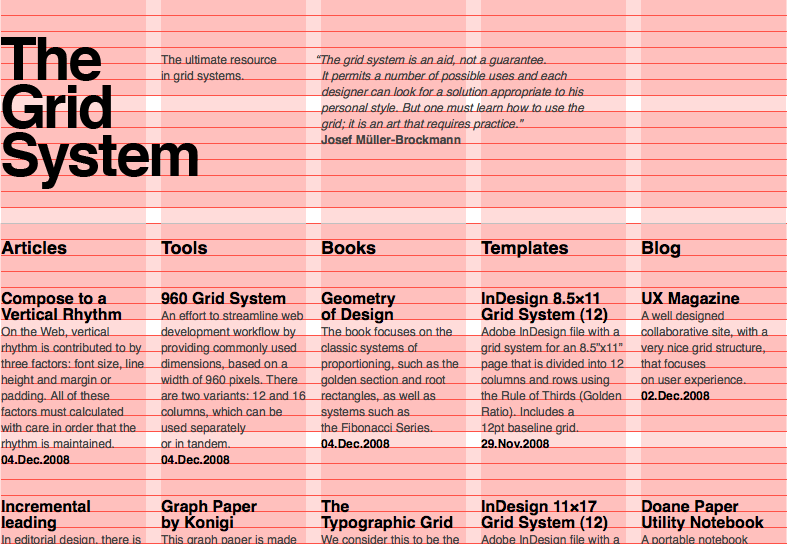

Technology fundamentals for D3.js - HTML, CSS, SVG, Javascript
A tutorial by Kanit "Ham" Wongsuphasawat (@kanitw), Jane Hoffswell, and Dominik Moritz (@domoritz)
Notes
- HTML, CSS and SVG examples are all codepens, which you can click edit to play with.
- You can also use inspector (
⌘⎇Iin Firefox or Chrome) to inspect examples. - Also use Javascript console to try Javascript code examples.
HTML
Hypertext Markup Language
Plain Text
Use HTML to markup
html, body, h1, p, strong, em, a, img
HTML: div, span + ID, Class
More Tags
ul, ol, li),
hr, br, form, input, select, iframe
DOM
- A convention for representing and interacting with objects in HTML, XHTML and XML documents.
- Nodes of every document are organized in a tree structure, called the DOM tree
- For example, use inspector to see this file's source.
- Provides API to modify its content using language such as Javascript
CSS Selectors
Query the DOM Tree
See also: CSS Properties – Webmonkey and CSS Selectors on NetTuts
CSS: Box Model, Position
The default position is position: static;

CSS: Position
relative
adjust the element's position, without changing layout
CSS: Position
absolute
taken out of the flow and thus takes up no space when placing other elements. The absolutely positioned element is positioned relative to nearest positioned ancestor. If a positioned ancestor doesn't exist, the initial container is used.
CSS: Position
absolute under relative
CSS: Short Form
background-color: #000; background-image: url(images/bg.gif); background-repeat: no-repeat; background-position: top right;
Can be shortened to:
background: #000 url(images/bg.gif) no-repeat top right;
CSS: Include
Inline:
...
Include:
Sass
Variable, Nesting, Partials, Import, Mixins, Inheritance, Operators
/* variable, operator */
$font-stack: Helvetica, sans-serif;
$primary-color: #333;
body {
font: 0.8*100% $font-stack;
color: $primary-color;
}
/* nesting */
nav {
ul {
margin: 0;
padding: 0;
list-style: none;
}
li { display: inline-block; }
a {
display: block;
padding: 6px 12px;
text-decoration: none;
}
}
/* mixin */
@mixin border-radius($radius) {
-webkit-border-radius: $radius;
-moz-border-radius: $radius;
-ms-border-radius: $radius;
-o-border-radius: $radius;
border-radius: $radius;
}
.box { @include border-radius(10px); }
Compass is a collection of reusable mixins for Sass.
Less is a another option.
Advanced CSS
- CSS flexbox and grid can be very useful for creating page layout.
- To make advanced CSS work with older browser, you can easily add autoprefixer if you use a build system such as Webpack.
CSS: Grids
Grid is one of the most commonly used graphic design concept.

CSS: Learn more!
- Learn CSS, CSS Portal – Mozilla Developer Network
- CSS Zen Garden– huge collection of examples
- Use inspector to learn from others.
SVG
Scalable Vector Graphics
SVG shapes
Also check out http://bost.ocks.org/mike/d3/workshop/#109
SVG + CSS
SVG: Polygon, Polyline
Use coordinates to specify path
SVG: Path
-
M x y– Move to (x,y) -
m dx dy– Move by (dx,dy) L x y– Line to (x,y) (orl dx dy)H x,V y– draw horizontal and vertical linesZ,zclose path- See also: Curves Commands
SVG: Path Example
SVG: Group, Title & Transform
- Transform example:
translate - Use
titlefor tooltip
SVG: More Transforms
rotate, scale, skewX, skewY
See more Transformation
SVG: No-Layer
Painter's Algorithm: any pixel-paint applied later obscure any earlier paint and therefore appear to be "in front".
SVG: Transparency
rgba or opacity
SVG: Learn more!
Javascript
Client-side Javascript: Inline/Include
Inline
Include
Data Types
- Numbers - 42, 3.14159
- Logical - true, false
- Strings - "Hello", 'Hello'
-
null -
undefined* - Yes.undefinedis notnull! -
Objects -
functions
See also Values, Variable, Literals–MDN
Variables
var a;
console.log("The value of a is " + a); // logs "The value of a is undefined"
console.log("The value of b is " + b); // throws ReferenceError exception
b = 5 // declare global variable ... equivalent to window.b = 5
console.log(b, window.b) // 5, 5
Javascript uses dynamic typing.
x = "The answer is " + 42; // "The answer is 42"
"37" - 7; // 30
"37" + 7; // "377"
"1.1" + "1.1"; //= "1.11.1"
(+"1.1") + (+"1.1"); // 2.2
+"1.1" // 1.1 "+" operator converts string to number
Tips: operator can return Object too.
y = null || "String"
y // "String"
Control Flow
C-Style `for`, `while`, `continue`, `break`, `if`/`else`, `switch/case`
for (i=0; i<10; i++) {
if (condition) {
statement_1_runs_if_condition_is_true();
break;
} else {
statement_2_runs_if_condition_is_false();
continue;
}
}
(I'm not showing while, switch/case here for brevity.)
Objects: Literals & new
//create object using an object literal
var apple = {
// quotes not required for a property name
state: "CA",
// unless the name contains space(s) or precedes with number or the name is reserved word
"famous founder": "Steve Jobs",
// property value can be any type including function
getCity: function(){return "Cupertino";},
// nested object
boards: { "CEO": "Tim Cook"}
};
apple.state; // "CA"
apple["state"]; // "CA"
apple.getCity(); // "Cupertino"
apple['getCity'](); // "Cupertino"
apple.boards.CEO // "Tim Cook"
//create object using new instead
var microsoft = new Object();
microsoft.state = "WA";
microsoft['famous founder'] = "Bill Gates";
microsoft.getCity = function(){ return "Redmond";};
for .. in
Careful: use hasOwnProperty to check
var obj = {a:1, b:2, c:3}, key;
Object.prototype.crazy = 4;
for (key in obj) {
if(obj.hasOwnProperty(key)){ //avoid the inherited obj.crazy=4
console.log(key, obj[key]); // "a, 1" "b, 2", "c, 3"
}
}
Arrays
var numbers = [ 5, 10, 15, 20, 25];
numbers[1] // 10
numbers[2] // 15
numbers.length = 5
2 in numbers // true
5 in numbers // false
numbers.a = 5 // Array is an object
numbers.a // 5
'a' in numbers // true
var numbers = [ 5, 10, , 20, 25, , ];
numbers[1] // 10
numbers[2] // undefined
numbers.length //6 last empty comma is automatically ignored
// array with multiple types of values
var mashup = [ 1,3, 4.5, 5.6, "string", null, undefined, true ];
Function
First class object...
function foo(a1, a2){
// code
console.log(a1+a2);
}
var foo = function(a1, a2){
// code
console.log(a1+a2);
};
foo(a1,a2); // call
function g(f){ f(1,2); }
g(foo) // 3
See also: Arguments Objects
Scope
- Javascript has function level scope, not block level scope*.
- The inner function full access to all the variables and functions defined inside the outer function. But the converse is not true.
var name = "Andy"
var pet = function(name) { // The outer function defines a variable called "name"
var getName = function() {
return name; // The inner function has access to the "name" variable of the outer function, which is "Vivie" in this case.
}
return getName; // Return the inner function, thereby exposing it to outer scopes
};
var myPet = pet("Vivie");
myPet(); // Returns "Vivie"
console.log(name); // "Andy"
*ES2016 and TypeScript include block-level scoping.
Scope
Javascript has function level scope, not block level scope*.
var x = 1;
{
var x = 2;
}
alert(x); // outputs 2
*ES2016 and TypeScript include block-level scoping.
Scope: Hoisting
console.log(x === undefined); // logs "true"
var x = 3;
is equivalent to
var x;
console.log(x === undefined); // logs "true"
x = 3;
IIFE
Immediately Invoked Function Expression
var elems = document.getElementsByTagName( 'a' );
for ( var i = 0; i < elems.length; i++ ) {
elems[ i ].addEventListener( 'click', function(e){
e.preventDefault();
alert( 'I am link #' + i );
}, 'false' );
}
The value of `i` never gets locked in. Thus, every link, when clicked (well after the loop has finished executing), alerts the total number of elements.
var elems = document.getElementsByTagName( 'a' );
for ( var i = 0; i < elems.length; i++ ) {
(function( lockedInIndex ){
elems[ i ].addEventListener( 'click', function(e){
e.preventDefault();
alert( 'I am link #' + lockedInIndex );
}, 'false' );
})( i );
}
This works, because inside the IIFE, the value of `i` is locked in as `lockedInIndex`.
IIFE: Anonymous Namespaces
Use IIFE to avoid namespace clashing!
(function() {
// a self contained "namespace"
// PUT YOUR NONE PUBLIC SCRIPT HERE
// ...
window.foo = function() {
// an exposed closure
};
})(); // execute the function immediately
this
var test = {};
this; // this = global object aka window
foo(); // this = global object again
test.foo(); // this = test
new foo(); // this = newly created object
Explicity Setting of this
function foo(a, b, c) {
// this = bar here when foo is called from apply and call below
}
var bar = {};
foo.apply(bar, [1, 2, 3]); // array will expand to the below
foo.call(bar, 1, 2, 3); // results in a = 1, b = 2, c = 3
Source: Javascript Garden
"that"
Foo = {a:1};
Foo.method = function() {
var that = this;
function test() {
// Use that instead of this here
// because here this is set to the global object
console.log(this, that); // Window, {a:1, method: function}
}
test();
}
OOP in Javascript: using Constructor
function Person(gender) {
this.gender = gender;
}
Person.prototype.sayHello = function(){
alert ('hello');
};
var person1 = new Person('Male'), person2 = new Person('Female');
// call the Person sayHello method.
person1.sayHello(); // hello
Source: Mozilla
OOP in Javascript: Inheritance
Extend Person
function Person(gender) {
this.gender = gender;
}
Person.prototype.sayHello = function(){
alert ('hello');
};
// inherit Person
Student.prototype = new Person();
// correct the constructor pointer because it points to Person
Student.prototype.constructor = Student;
// replace the sayHello method
Student.prototype.sayHello = function(){
alert('hi, I am a student');
}
var student1 = new Student();
student1.sayHello();
alert(student1 instanceof Person); // true
alert(student1 instanceof Student); // true
Prototypal Inheritance
var o = {a: 1};
// The newly created object o has Object.prototype as its [[Prototype]]
// o has no own property named 'hasOwnProperty'
// hasOwnProperty is an own property of Object.prototype. So o inherits hasOwnProperty from Object.prototype
// Object.prototype has null as its prototype.
// o ---> Object.prototype ---> null
var a = ["yo", "whadup", "?"];
// Arrays inherit from Array.prototype (which has methods like indexOf, forEach, etc.)
// The prototype chain looks like:
// a ---> Array.prototype ---> Object.prototype ---> null
function f(){
return 2;
}
// Functions inherit from Function.prototype (which has methods like call, bind, etc.)
// f ---> Function.prototype ---> Object.prototype ---> null
source & see also: prototype chain
Module Pattern & Private Variable
Module Pattern use scope to make a private variable
function Counter(start) {
var count = start;
return {
increment: function() {
count++;
},
get: function() {
return count;
}
}
}
var foo = Counter(4);
foo.increment();
foo.get(); // 5
foo.count // undefined ... outsider can't access count directly
=== and ==
- The
==operator will compare for equality after doing any necessary type conversions (with very weird conversion rules). -
The
===operator will not do the conversion, so if two values are not the same type===will simply return false.
'' == '0' // false
0 == '' // true
0 == '0' // true
false == 'false' // false
false == '0' // true
false == undefined // false
false == null // false
null == undefined // true
' \t\r\n ' == 0 // true
Never use the evil twins.See also: http://stackoverflow.com/questions/359494/does-it-matter-which-equals-operator-vs-i-use-in-javascript-comparisons
Instead, always use===and!==.
Javascript: DOM
As mentioned earlier, DOM provided javascript API. You should at least know about:
JSON
Javascript Object Notation
Derived from Javascript as an XML alternative for storing data.
[{
"yield": 27,
"variety": "Manchuria",
"year": 1931,
"site": "University Farm"
}, {
"yield": 48.86667,
"variety": "Manchuria",
"year": 1931,
"site": "Waseca"
}, {
"yield": 39.93333,
"variety": "Manchuria",
"year": 1931,
"site": "Crookston"
}, {
"yield": 32.96667,
"variety": "Manchuria",
"year": 1931,
"site": "Grand Rapids"
}]
JSON
Javascript Object Notation
- JSON requires double quote (
") around keys - JSON doesn't support
undefined, expressions, functions, and comments
JSON.parse('{"a":null}'); // {a:null}
JSON.parse('{"a":undefined}'); // SyntaxError: Unexpected token u
JSON.parse('{"a":function(){return 'a';}}'); // SyntaxError: Unexpected identifier
Syntax Alternatives
Some people like syntax alternative that compile into javascript such as Coffeescript, MS TypeScript.
Javascript: Learn More
- Basics: Javascript – Mozilla Developer Network
- Refresher: Javascript Garden
- More in cse512 resources
Workflow & Tools
- Learn to use the Firefox developer tools or the Webkit Inspector
- Good Text Editor GUI? – Visual Studio Code or Sublime Text
- Also use Emmet for faster HTML authoring
- Use a Linter (e.g., ESLint, TSLint)
- Reduce the gulf of execution and evaluation with LiveReload or other similar tools.
- Like IDE and willing to pay (unless you are a student)? Webstorm is a good option.
Feedback
- Please fill out the survey https://goo.gl/forms/BOF7jNuucPHyEn2M2